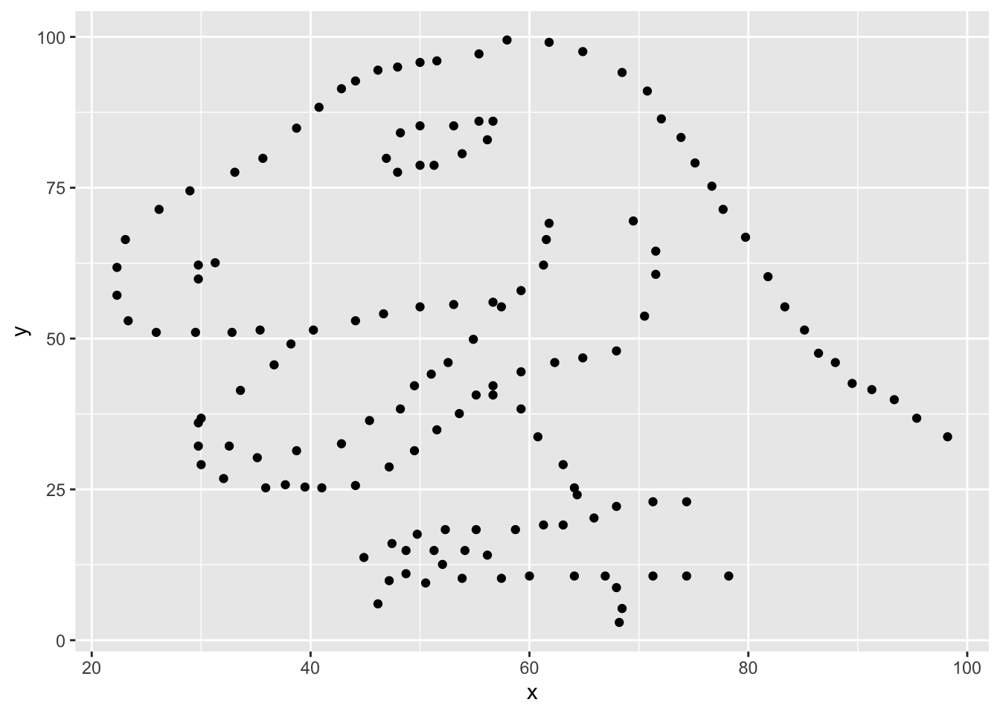

library(tidyverse)
library(datasauRus)Lab 1: Hello R!
The goal of this lab is to acquaint you with R (the computing language), RStudio (the IDE, integrated development environment), and Posit Cloud (the browser based service we will use to access RStudio).
Getting started
Go to Posit Cloud and start the project titled lab-1 - Hello R!.
Under the Files tab on the lower right, click on
lab-1.qmdto open the lab template.

- Complete the exercises in this document.
Warm up
YAML
The top portion of your Quarto Markdown file (aka .qmd), you’ll find three dashed lines. Between the dashed lines is called YAML. YAML stands for “YAML Ain’t Markup Language”. It is a human friendly data serialization standard for all programming languages. All you need to know is that this area is called the YAML (we will refer to it as such) and that it contains meta information about your document.
Change the author name to your name and update the date with today’s date. Click the render button to render the document. What do you notice?
Note
To avoid issues that can occur while rendering, it is a good idea to render frequently. At least after every exercise.
Packages
In this lab we will work with two packages: the tidyverse package which is a collection of packages for doing data analysis in a “tidy” way and the datasauRus package which contains the data set for today.
Warning
If you are using R on the container, packages we use should already be installed and only need to be loaded with the function library(). If you are using a local version of R you probably have to run the following code in the console to install the packages (one time only!)
install.packages("tidyverse")
install.packages("datasauRus")Exercises
The data frame we will be working with today is called datasaurus_dozen and it’s in the datasauRus package. Actually, this single data frame contains 13 data sets (a “baker’s dozen”), designed to show us why data visualization is important and how summary statistics alone can be misleading. The different data sets are marked by the data set variable.
To find out more about the data set, type the following in your console (this will bring up the help file).
?datasaurus_dozenExercise 1
Based on the help file, how many rows and how many columns does the datasaurus_dozen file have? What are the variables included in the data frame? Add your responses to your lab report under “Exercise 1”.
Let’s take a look at the names of the data sets inside of datasaurus_dozen. To do so this, we can make a frequency table of the “data set” variable. Run the code chunk below. Note: when you run the code chunk below, a table “prints” to the screen. In general, we say “print to screen” to mean that the output of your code should show up on your screen (when asked to ‘print to screen’ in an assignment, you should make sure the output displays in your rendered document).
datasaurus_dozen |>
count(dataset)# A tibble: 13 × 2
dataset n
<chr> <int>
1 away 142
2 bullseye 142
3 circle 142
4 dino 142
5 dots 142
6 h_lines 142
7 high_lines 142
8 slant_down 142
9 slant_up 142
10 star 142
11 v_lines 142
12 wide_lines 142
13 x_shape 142The original Datasaurus (dino) data was created by Alberto Cairo. The other Dozen were generated using simulated annealing and the process is described in the paper Same Stats, Different Graphs: Generating data sets with Varied Appearance and Identical Statistics through Simulated Annealing by Justin Matejka and George Fitzmaurice. In the paper, the authors simulate a variety of data sets that have the same summary statistics as the original Datasaurus but have very different data.
Note
You can view the whole data frame by running the code view(datasaurus_dozen) in the console. This will open the data frame in a new tab. Try it out!
Exercise 2
Plot y vs. x for the dino data set. Then, calculate the correlation coefficient between x and y for this data set.
Below is the code you will need to complete this exercise. Basically, the answer is already given, but you need to include relevant bits in your qmd document and successfully render it and view the results.
Start with the datasaurus_dozen and pipe it into the filter function to filter for observations where dataset == "dino". Store the resulting filtered data frame as a new data frame called dino_data.
dino_data <- datasaurus_dozen |>
filter(dataset == "dino")There is a lot going on here, so let’s slow down and unpack it a bit.
First, the pipe operator: |>, takes what comes before it and sends it as the first argument to what comes after it. So here, we’re saying filter the datasaurus_dozen data frame for observations where dataset == "dino".
Second, the assignment operator: <-, assigns the name dino_data to the filtered data frame. Note in R you may use either <- or = for an assignment operator.
Next, we need to visualize these data. We will use the ggplot function for this. Its first argument is the data you’re visualizing. Next we define the aesthetic mappings. In other words, the columns of the data that get mapped to certain aesthetic features of the plot, e.g. the x axis will represent the variable called x and the y axis will represent the variable called y. Then, we add another layer to this plot where we define which geometric shapes we want to use to represent each observation in the data. In this case we want these to be points, hence geom_point.
ggplot(data = dino_data, mapping = aes(x = x, y = y)) +
geom_point()
For the second part of this exercise, we need to calculate a summary statistic: the correlation coefficient. The correlation coefficient (r) measures the strength and direction of the linear association between two variables. You will see that some of the pairs of variables we plot do not have a linear relationship between them. This is exactly why we want to visualize first: visualize to assess the form of the relationship, and calculate r only if relevant.
In this case, calculating a correlation coefficient really doesn’t make sense since the relationship between x and y is definitely not linear, but is instead more ‘dinosaur-esque’.
For illustrative purposes only, let’s calculate the correlation coefficient between x and y.
dino_data |>
summarize(r = cor(x, y))# A tibble: 1 × 1
r
<dbl>
1 -0.0645Exercise 3
Plot y vs. x for the star dataset. You can (and should) reuse code we introduced above, just replace the dataset name with the desired dataset. Then, calculate the correlation coefficient between x and y for this dataset. How does this value compare to the r of dino?
To begin, edit the name of the code chunks from ex-3-1 and ex-3-2 to something more meaningful, e.g: plot-star and star-correlation respectively.
Exercise 4
Finally, let’s plot all datasets at once. In order to do this we will make use of faceting, given by the code below:
ggplot(datasaurus_dozen, aes(x = x, y = y, color = dataset)) +
geom_point(show.legend = FALSE) +
facet_wrap(~ dataset, ncol = 3)And we can use the group_by function to generate all the summary correlation coefficients. We’ll see these functions again and again.
datasaurus_dozen |>
group_by(dataset) |>
summarize(r = cor(x, y)) Exercise 5
Describe what |> does. Hint: run the following two code chunks. What do you notice?
dino_data |>
summarize(mu_x = mean(x),
mu_y = mean(y))summarize(dino_data, mu_x = mean(x), mu_y = mean(y))Exercise 6
In the above code chunk, identify each of the following as an argument or a function:
summarizedino_datameanxymu_x = mean(x)
Exercise 7
Combine the code from exercises 4 and 5 to compute the mean(x) and mean(y) for each data set. Print your result to the screen. What do you notice?
Formatting
For all assignments in this course there is a “formatting” component to the grade. To receive full points for “formatting”, you must:
Have your name (and team name if appropriate) at the top of the rendered document
Pipes
|>and ggplot layers+should be followed by a newline (see formatting in code chunks above)Your code should be under the 80 character code limit. (You shouldn’t have to scroll to see all your code on the rendered document).
All exercises and corresponding pages should be linked on Gradescope.
Adding new lines after pipes and layers is a “tidyverse” styling. Tidyverse styling is good, general practice and will help make your code more legible. For a more extensive list of recommended guidelines, click here.
Submitting
To submit your assignment to Gradescope:
Export your PDF. (TO DO: Add instructions.)
Go to http://www.gradescope.com and click Log in in the top right corner. - Click
School Credentials,Duke NetIDand log in using your NetID credentials.Click on your MATH 517 course.
Click on the assignment, and you’ll be prompted to submit it.
Mark the pages associated with each exercise, 1 - 7. All of the papers of your lab should be associated with at least one question (i.e., should be “checked”). - Select all pages of your .pdf submission to be associated with the “Formatting” section.
Grading
Total: 50 pts.
- Exercise 1: 7 pts
- Exercise 2: 6 pts
- Exercise 3: 6 pts
- Exercise 4: 6 pts
- Exercise 5: 3 pts
- Exercise 6: 6 pts
- Exercise 7: 8 pts
- Workflow and formatting: 8 pts
Acknowledgements
This assignment was adapted from a lab in Data Science in a Box.